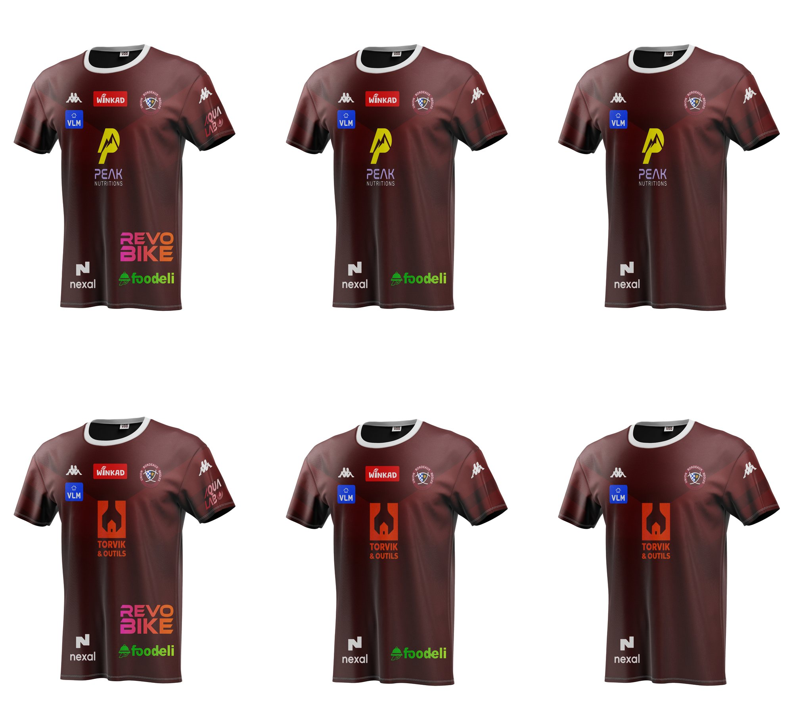
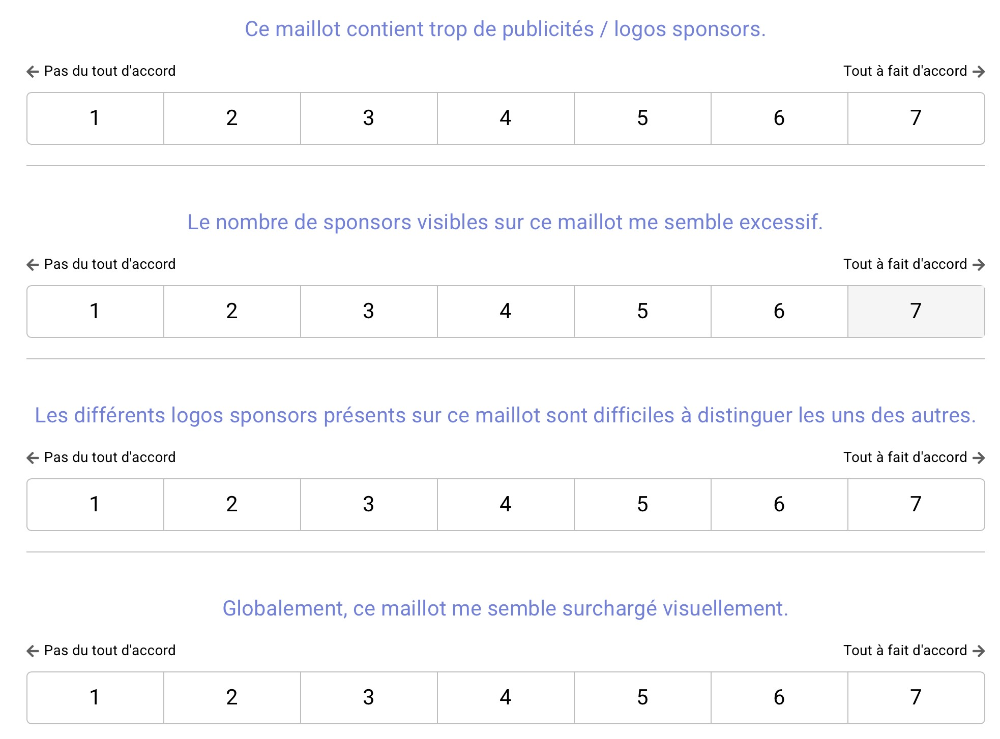
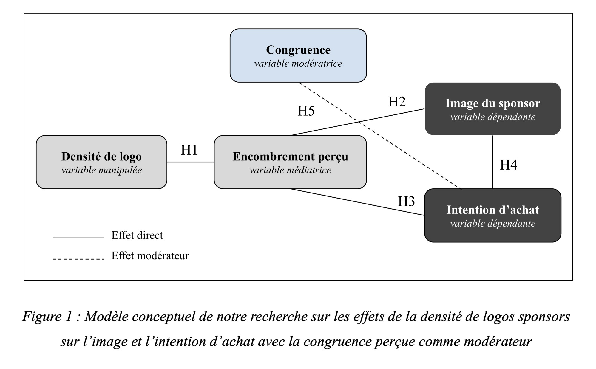
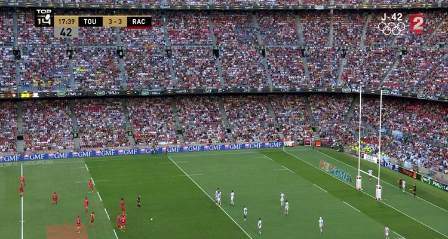
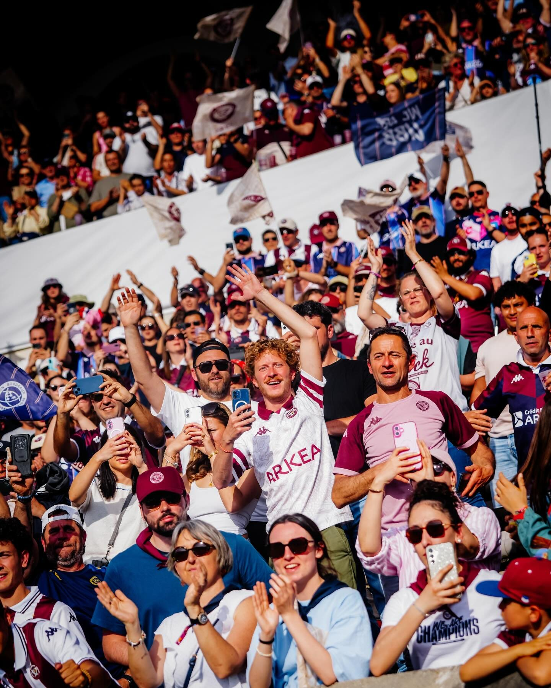

Pourquoi payer pour être vu sur un maillot où l’on ne distingue plus rien
- Contexte
- Le maillot de rugby, support publicitaire de plus en plus chargé. Celui de l'UBB compte une dizaine de logos.
- Rôle
- Mémoire de recherche mené en binôme, de la question de départ à l'analyse des résultats.
- Durée
- Année universitaire 2025 - 2026, IAE Bordeaux.
- Méthode
- Étude expérimentale, plan 3 × 2, 210 répondants, analyses statistiques sous Jamovi.
- Question
- Dans quelle mesure la densité de logos sur un maillot sportif affecte-t-elle l’image perçue et l’intention d’achat du sponsor principal, et ce phénomène est-il modéré par la congruence perçue entre la marque et le club ?
Constat
Lecture stratégie« Un maillot se doit d'être lisible, identifiable et cohérent. »Mémoire M2, 2026
Le maillot est l'un des supports les plus visibles du sponsoring sportif, et l'un des plus encombrés : celui de l'UBB réunit une dizaine de logos entre la poitrine, les manches et le dos. Pour un supporter, c'est pourtant tout sauf un panneau publicitaire. C'est un objet d'appartenance, qu'on achète, qu'on offre et qu'on garde des années.
Sur ce support, les logos ne se succèdent pas comme des spots publicitaires à la télévision : ils sont tous là, en même temps, pendant tout le match. D’où notre question : cette accumulation finit-elle par se retourner contre les marques elles-mêmes ?
L'angle mortLes études de référence sur le sponsoring maillot mesurent l'effet d'un sponsor pris seul, comme si les autres logos n'existaient pas. Cette étude part de l’inverse : un sponsor jugé au milieu de tous les autres.
« Certains sont immédiatement identifiables, d'autres se fondent dans l'ensemble au point de devenir invisibles. »Mémoire M2, à propos du maillot de l'UBB
Tout part d'une image du Tournoi des Six Nations : un ailier du XV de France repousse son propre coéquipier, trompé par deux tenues trop proches. Si un maillot peine déjà à se faire lire avec ses couleurs, qu'en est-il des logos qui s'y ajoutent ?
Le sujet est né de deux regards : celui de ma binôme, abonnée à l’UBB, qui voit les maillots évoluer depuis la tribune, et le mien, celui d’une sportive formée au sport et à son économie en licence STAPS. En spectatrice, au stade comme devant un écran, j’ai vu que le même maillot ne se lit pas du tout de la même façon.
Parti pris
Lecture stratégie« Que ressentent les répondants face à un maillot plus ou moins chargé ? »Mémoire M2, 2026
Plutôt qu'un sondage sur des maillots vus dans la vie réelle, nous avons choisi l'expérimentation : six maillots fictifs de l'UBB, identiques en tout sauf deux points, le nombre de logos et le sponsor principal. D'un côté Peak, une marque de nutrition sportive cohérente avec le rugby, de l'autre Torvik, une marque d'outillage qui ne l'est pas. Chaque répondant ne voyait qu'un seul maillot, tiré au hasard.
Le club est réel, l’UBB, pour qu’un amateur de rugby reconnaisse immédiatement l’univers et puisse juger si une marque lui correspond. Les marques, elles, sont toutes inventées : aucune notoriété ne vient fausser le jugement. Et sur les six versions, les logos secondaires gardent la même taille et la même typographie : aucun maillot n’est plus lisible qu’un autre par accident.
« Prenez quelques instants pour l'observer attentivement. »Consigne du questionnaire, avant chaque maillot
Le questionnaire a circulé dans nos réseaux, sur Instagram, LinkedIn et de bouche-à-oreille, auprès de personnes qui regardent du rugby, ne serait-ce que de temps en temps. Chaque répondant devait observer le maillot au moins quinze secondes avant de pouvoir continuer.
551 personnes l'ont commencé. Une fois écartés les questionnaires incomplets, ceux qui ne regardent jamais de rugby et ceux qui ont échoué à la question d'attention, 210 réponses ont été retenues. Près de la moitié des répondants ont entre 18 et 24 ans, et les trois quarts vivent en Nouvelle-Aquitaine.
Impact
Lecture stratégie« Ce n'est pas le nombre de logos en lui-même qui nuit à l'image du sponsor, mais la sensation de surcharge visuelle qu'il provoque. »Mémoire M2, 2026
Ce que ces résultats ne disent pasLe nombre de logos ne fait baisser l'intention d'achat que chez les spectateurs les plus impliqués dans le rugby. Une marque cohérente avec le club n'est pas protégée pour autant : la congruence améliore son image, sans amortir la surcharge. Enfin, l'étude repose sur des images fixes, vues sur un écran, par un échantillon jeune et vivant surtout en Nouvelle-Aquitaine.
« Un logo bien visible sur un maillot peu encombré vaut davantage […] qu'un logo de taille plus grande, noyé dans un maillot saturé d'autres logos. »Mémoire M2, 2026
Sur le terrain, ces résultats changent la façon de négocier un partenariat. Une marque peut demander à limiter le nombre de sponsors présents à ses côtés, comme elle négocie déjà la taille et l'emplacement de son logo. Un club peut faire de la rareté un argument, et fixer le prix d'un emplacement selon la densité du maillot. Ceux dont l’intention d’achat baisse sont justement les plus impliqués envers le rugby, ceux que les marques veulent convaincre en priorité.
Une limiteNous n'avons testé que le maillot, alors que le short porte parfois autant de logos. Et l'encombrement vécu pendant un vrai match est sans doute plus fort encore.

Image à fournir
Capture à fournir
Schéma à fournir Photo à fournir
Photo à fournir
Photo à fournir Photo à fournir
Photo à fournir
Photo à fournirCe que j'en retiens
Le maillot est un espace dont la valeur dépend autant de ce qu'on y met que de ce qu'on choisit de ne pas y mettre.
Conclusion, mémoire M2